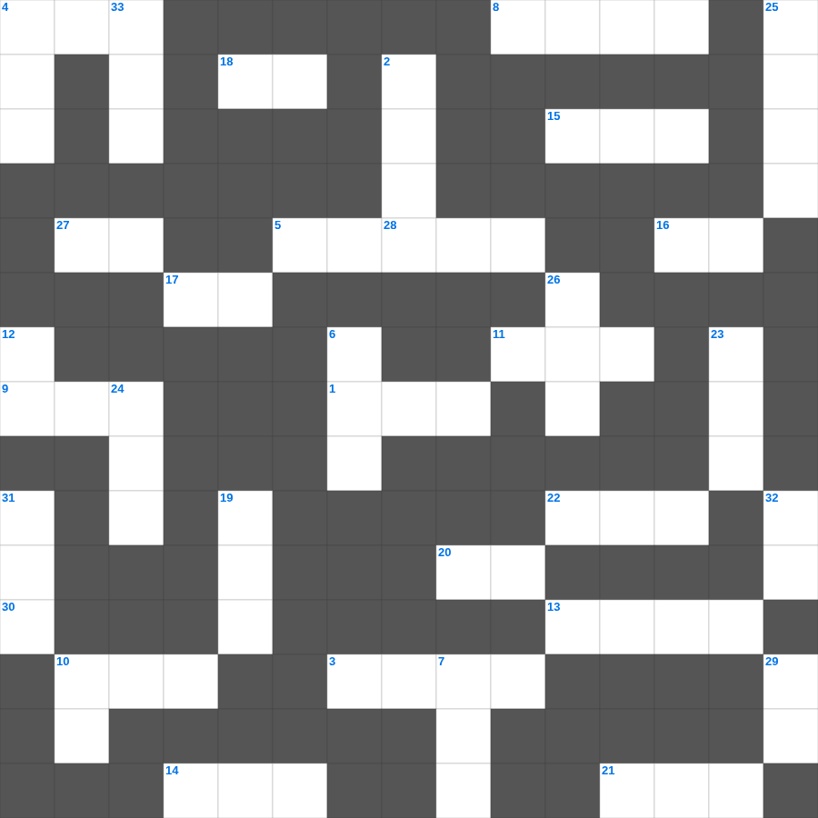

성경 상식: 성경 속 숫자
성경 상식를 주제로 한 성경 상식 말씀 퀴즈입니다. 35개의 단어를 맞춰보세요! 가로세로 낱말 퍼즐 형식으로 성경 상식의 핵심 내용을 재미있게 복습할 수 있습니다.

📝 가로 힌트
1. 이스라엘이 광야에서 보낸 년수
3. 눈물의 선지자로 불리는 사람
4. 함께 가져온 물고기의 마리 수
5. 예수님이 십자가에 못 박히신 곳
8. 할 수 있거든이 무슨 말이냐 믿는 자에게는 이것이 없느니라
9. 평안히 눕고 이것하기도 하리니
10. 나아만 장군이 문둥병을 고친 강
11. 이스라엘이 외칠 때 무너진 성
13. 빌립이 전도한 제자
14. 성경의 맨 처음 책
15. 노아의 방주에 비가 내린 일수
16. 네 이것을 공경하라
17. 믿음은 바라는 것들의 이것
18. 안식일을 기억하여 이것하게 지키라
20. 아무것도 이것하지 말고 오직 기도와 간구로
21. 메시아의 탄생을 예언한 평화의 선지자
22. 삼손의 힘의 비밀을 알아낸 여인
27. 시편 다음 책
28. 사자 굴에서도 살아남은 사람
30. 겨자씨 한 알 만한 믿음이 있으면 이 이것을 옮기리라
📝 세로 힌트
2. 예수님을 은 30에 판 제자
4. 바울이 2년 동안 가르쳤던 서원
6. 예수님이 자라나신 동네
7. 모세의 누나
10. 사랑받는 제자로 불린 사람
12. 여호와는 나의 이것이시니 내게 부족함이 없으리로다
19. 안드레의 형제
23. 이 기적을 베푸신 분
24. 이것 하지 말라(남의 물건을 가져감)
25. 마태 마가 누가 다음 복음서
26. 바울이 로마로 가기 전 마지막으로 머문 섬
29. 야곱의 아들 수
31. 엘리야가 바알 선지자와 대결한 산
32. 나의 이것을 너희에게 주노라
33. 이사악의 아내
🏷️ 키워드
성경 상식 말씀 퀴즈, 성경 상식, 십자가로세로, 성경퀴즈, 말씀퀴즈, 가로세로퍼즐